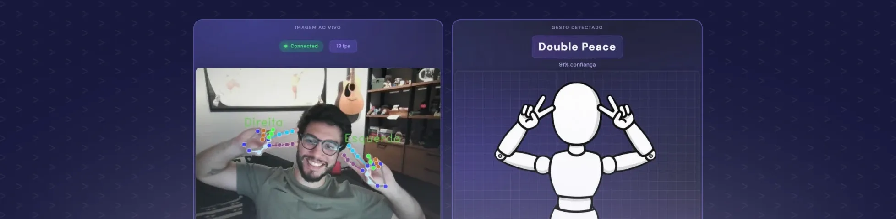

Vision Guard
Stack: Python, OpenCV, PyTorch, HuggingFace, Streamlit
Educador: Arthur Kamienski

Sobre o Projeto
O Vision Guard é um projeto desenvolvido dentro da Trilha Python, focada em introduzir os fundamentos da programação e da Inteligência Artificial através da área de visão computacional.
A proposta é criar uma aplicação capaz de identificar e rastrear objetos em tempo real utilizando a webcam. O projeto utiliza modelos modernos de IA e explora conceitos fundamentais como redes neurais convolucionais (CNNs) até a implementação prática com Python.
Durante o desenvolvimento são utilizadas ferramentas e bibliotecas modernas como OpenCV, PyTorch e HuggingFace para trabalhar com processamento de imagem e reconhecimento de objetos, além do Streamlit para criação de uma interface simples e interativa.
A trilha é ideal para quem está começando na programação ou deseja fortalecer sua base lógica enquanto constrói um projeto prático aplicando Inteligência Artificial em um cenário real.
Funcionalidades
- ✔ Captura de vídeo em tempo real utilizando webcam
- ✔ Identificação automática de objetos utilizando IA
- ✔ Rastreamento de objetos em tempo real
- ✔ Processamento de imagens com OpenCV
- ✔ Utilização de modelos de visão computacional com PyTorch
- ✔ Interface simples para visualização com Streamlit